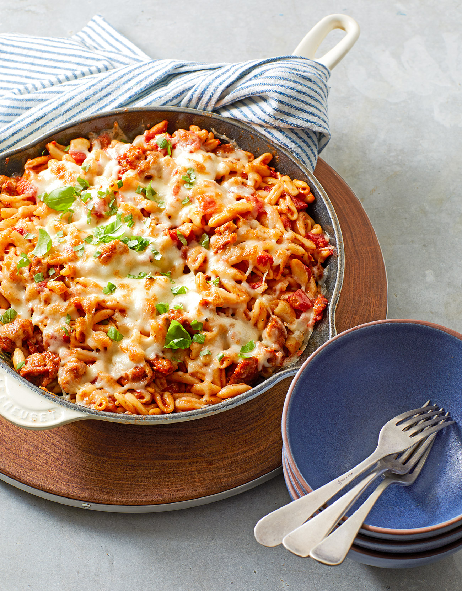

Cavatelli

Description
This recipe is perfect for your family if you have had a long day at work. All you need to do is get a pot of water boiling and preheat that oven. You will be all set.
Ingredients
- 1 box of shells
- 1 jar of your favorite marinara sauce
- 1 pack of mozarella cheese
- 1 tbsp of olive oil
- 1 pound of ground beef or ground sausage
Steps
- Set the oven temperature to 425 degrees F
- Boil a pot of water large enough to cook the box of pasta.
- Warm the oil in a pan, and once sizzling, add the meat. Cook until browned.
- Warm the marinara sauce in its own pot.
- Once the meat has browned, add the meat into the sauce. For extra flavor, add the cooked juice as well.
- Once the pasta, the meat, and the sauce are cooked and/or warmed up, mix together in a casserole dish
- Spread cheese as the top layer of the pasta
- Cook for 20-25 minutes in the oven or until cheese is as desired.